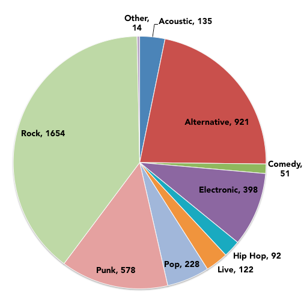
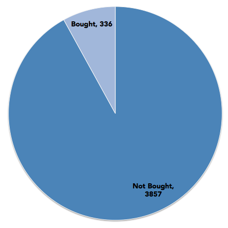
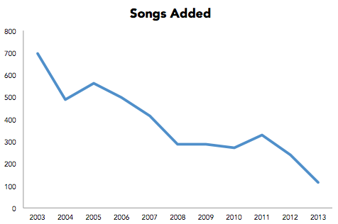

On August 5th, 2003, I prepared my new laptop to take to college, importing all my MP3s from the family computer into iTunes. Ten years later, I no longer have that laptop, but I’ve transferred my iTunes library from computer to computer in such a way that the play counts and dates added never reset. So now I have ten solid years of iTunes usage data.
I got all the data into a spreadsheet by enabling all the necessary columns in iTunes’ “Songs” view, selecting all, and copying and pasting. The track length times had to be converted from “time of day” to actual time lengths but otherwise everything was that easy. A few caveats: it’s unclear how much play count data is imported from iPods and iPhones (to say nothing of listening I did on work computers), there were a few times iTunes was left running without me listening, and I clearly have immature taste in music.
Statistics
First Song Added: Hands Down by Dashboard Confessional
Last Song Added: Young Blood (Renholdër Remix) by The Naked And Famous
| Songs | Artists | Albums | Song Length |
| 4,193 | 581 | 976 | 10d 23h 11m 43s |
| Total Song Plays | Total Time Listening |
| 37,900 | 96d 17h 39m 21s |
| Never Played | 1 Play | >10 Plays | >50 Plays | >100 Plays |
| 693 | 639 | 1,037 | 108 | 19 |
Top 10
| Times Played | Song | Artist | Length | Time Spent Listening |
| 203 | Honestly | Cartel | 3:29 | 11:47:07 |
| 176 | Lose It | Cartel | 2:30 | 7:20:00 |
| 149 | 12:51 | The Strokes | 2:26 | 6:02:34 |
| 140 | Stay The Same | Days Away | 3:41 | 8:35:40 |
| 131 | Seven Years | Saosin | 3:13 | 7:01:23 |
| 128 | The Curse of Curves | Cute Is What We Aim For | 3:24 | 7:15:12 |
| 125 | The First Single | The Format | 4:25 | 9:12:05 |
| 121 | I Want To Hear You Sad | The Early November | 3:31 | 7:05:31 |
| 118 | The Best Of Me | The Starting Line | 4:21 | 8:33:18 |
| 117 | Soul Meets Body | Death Cab For Cutie | 3:51 | 7:30:27 |
| Number of Songs | Artist(s) |
| 72 | All Time Low |
| 65 | Relient K |
| 60 | John Mayer |
| 58 | Cartel |
| 51 | Minus The Bear |
| 47 | Death Cab For Cutie, Jack Johnson, The New Amsterdams |
| 46 | We Are Scientists, Motion City Soundtrack |
| 45 | The Starting Line, Mae |
| 44 | Ratatat, Yellowcard |
| 43 | Guster, The Strokes, Incubus, Jimmy Eat World |
| Number of Plays | Artist |
| 1,618 | Cartel |
| 1,413 | The Starting Line |
| 924 | Death Cab For Cutie |
| 922 | Relient K |
| 828 | All Time Low |
| 819 | The Early November |
| 758 | Mae |
| 733 | Saosin |
| 713 | Jimmy Eat World |
| 591 | Something Corporate |
Charts


